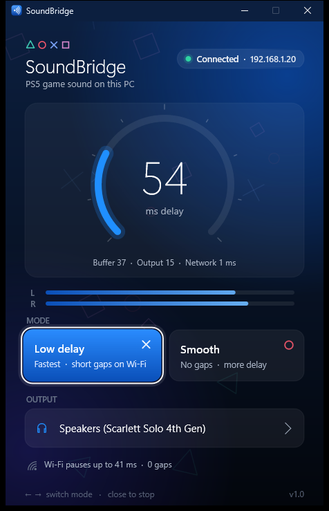

SoundBridge streams your jailbroken PS5's game audio over your home network to a tiny Windows app, with about 50 ms of delay. No PSN, no Remote Play, no capture card.

The payload taps the same audio mix the PS5 uses for Remote Play, cuts it into 5 ms packets and fires them at your PC. The app buffers only as much as your network needs.
Through libSceAvcap2, the payload reads the console's own audio mix: float stereo at 48 kHz, in 21 ms chunks.
Raw 16-bit PCM over UDP, small enough to never fragment. The PC says hello by broadcast; the PS5 answers and streams.
A jitter buffer learns your network, trims drift with a ±0.5 % speed nudge and plays through WASAPI's shortest period.
About 50 ms on the PC side over Wi-Fi. The buffer shrinks to whatever your network can hold steady.
The app finds your PS5 by itself and remembers it. Open them in any order; resending the payload just swaps it.
No Remote Play pairing, no account, no capture card. Just the payload and the app.
Low delay plays as early as possible. Smooth buffers over Wi-Fi hiccups. Switch any time.
Every gap fades out and back in, and late bursts are skipped, so delay never creeps up.
A native Direct2D window, about 250 KB, no installer. Uses ~0.5 % CPU while it plays.
Some PS5 Wi-Fi links stall for ~100 ms every few seconds. Low delay plays straight through them as a short faded gap; Smooth waits them out. Try it:
Measured on a PS5 (13.60) on 5 GHz Wi-Fi and a PC with a Focusrite Scarlett Solo. Hatched parts are estimates.
SoundBridge_PS5_13.60.elf and SoundBridge_Windows.zip from the latest release.Yes. SoundBridge only reads the audio mix and uses UDP port 9399, so it runs alongside controller payloads.
That's your PS5's Wi-Fi briefly pausing (the app shows how long in its bottom line). Use Smooth mode to hide it, or connect the PS5 with an Ethernet cable to remove it.
Yes. Click Output in the app and pick any device. It remembers your choice and reconnects if the device is unplugged and plugged back in.
Yes, nothing changes on the console. SoundBridge copies the mix; it doesn't redirect it.
Close the app. The payload keeps running until the PS5 restarts but only sends audio while the app is open.
It's a homebrew payload for a jailbroken console. It doesn't write to system files, only to /data/soundbridge. Use at your own risk.